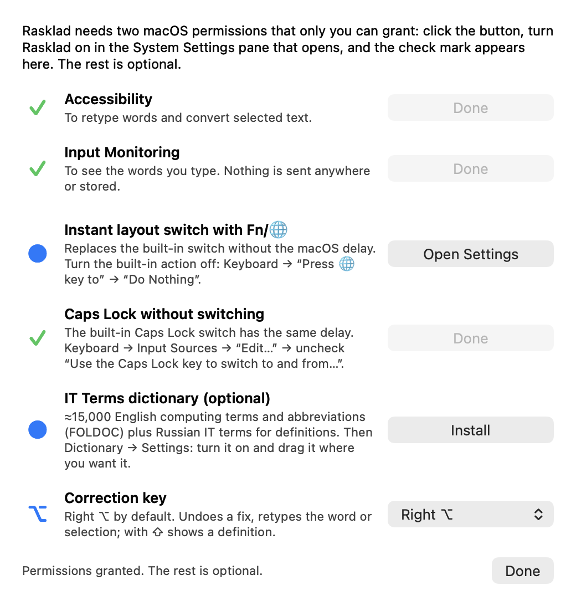

Rasklad
Free, open-source Punto Switcher alternative for Mac. Type in Russian or English — Rasklad fixes words typed in the wrong keyboard layout as you go.
Free · macOS 13+ · Apple Silicon and Intel · interface in English and Russian · Source code on GitHub

Features
Automatic layout switching
On Space, a word typed in the wrong layout is retyped: ghbdtn → привет, руддщ → hello. Ambiguous words follow the language of the phrase.
Typos and Caps Lock
Small typos (првиет → привет), accidental Caps Lock (пРИВЕТ → привет), words typed in two layouts, a stray space before punctuation.
Correction key
Right ⌥ by default: undo the last fix, convert the current or previous word or the selection to the other layout. With ⇧ — a dictionary definition.
Instant Fn/🌐 switch
Switches the input source on Fn/🌐 without the macOS delay.
Stays out of the way
No fixes in code editors, terminals, inside ``` blocks and in password fields. Word and app exceptions, per-app layout.
Private
Typed text is never sent anywhere or stored. Open source, MIT licence, no dependencies.
Install
- Download Rasklad.dmg and drag Rasklad to Applications.
- First launch: System Settings → Privacy & Security → “Open Anyway” (the app isn’t notarized).
- Grant Accessibility and Input Monitoring in the setup window.
FAQ
Is there a Punto Switcher for Mac?
The macOS version of Punto Switcher hasn’t been updated for years. Rasklad is a free open-source alternative that does the same job: automatic RU/EN layout switching and fixing text typed in the wrong layout.
Is Rasklad a Caramba Switcher alternative?
Yes. Rasklad is free and open source, works offline and never sends typed text anywhere. Besides layout switching it fixes typos and accidental Caps Lock, has a correction key and an instant Fn/🌐 switch.
Which languages are supported?
Russian and English keyboard layouts (ABC or U.S. and Russian).